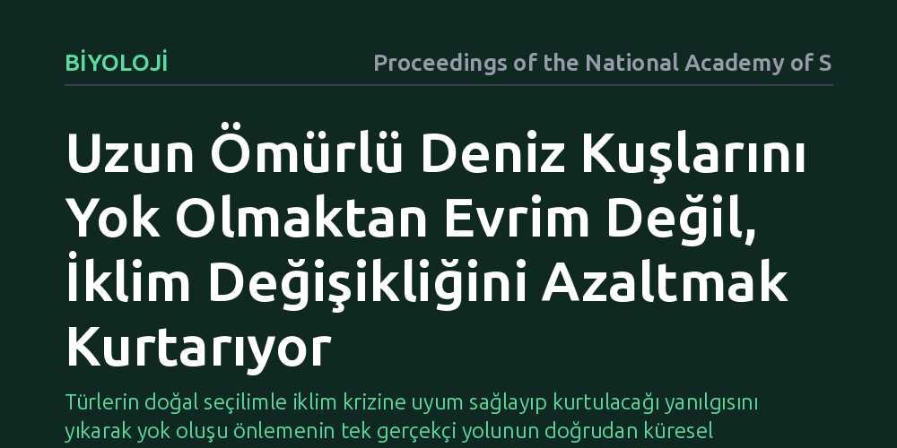

BIYOLOJI · Proceedings of the National Academy of Sciences · 2026-10-08
Uzun ömürlü deniz kuşlarının iklim krizine genetik uyum sağlayarak yok olmaktan kurtulup kurtulamayacağı incelendi. Bulgular, evrimsel adaptasyonun yetersiz kaldığını ve popülasyonun devamını sağlamada asıl belirleyicinin doğrudan emisyonları azaltmak olduğunu gösterdi.
Türlerin doğal seçilimle iklim krizine uyum sağlayıp kurtulacağı yanılgısını yıkarak yok oluşu önlemenin tek gerçekçi yolunun doğrudan küresel emisyonları düşürmek olduğunu gösteriyor.

İklim krizi hızlandıkça ekologların ve evrimsel biyologların aklındaki en kritik sorulardan biri şudur: Canlılar yok olmamak için yeterince hızlı evrimleşebilir mi? Yüzyıllardır süregelen evrim anlayışımız, canlıların değişen çevre koşullarına doğal seçilim yoluyla kademeli olarak uyum sağladığını söyler. Ancak insan kaynaklı küresel ısınma, Dünya tarihindeki en hızlı iklimsel dönüşümlerden birini tetiklemektedir. Birçok tür için mesele artık sadece yeni bir habitata yerleşmek değil, nesiller tükenmeden önce genetik olarak değişip hayatta kalma mücadelesi vermektir.
Bu soru özellikle deniz kuşları gibi onlarca yıl yaşayan, geç olgunlaşan ve az sayıda yavru veren uzun ömürlü canlılar için hayati bir önem taşır. Sinekler veya kısa ömürlü bitkiler birkaç mevsim içinde onlarca nesil devrederek hızlı seçilim avantajı yakalayabilirken, bir albatrosun tek bir nesil üretmesi bile on yıldan uzun sürebilir. Eğer evrimsel süreçler çevre felaketinin hızına yetişemiyorsa, doğanın kendi kendine adapte olmasını beklemek bu türlerin sessizce yok oluşuna seyirci kalmak anlamına gelir.
Araştırmacılar bu kritik soruya yanıt bulabilmek için geleneksel ekoloji çalışmalarının ötesine geçen kapsamlı bir modelleme çerçevesi geliştirdi. Yöntem; sayısal genetik prensiplerini, popülasyon demografisini ve küresel iklim projeksiyonlarını tek bir eko-evrimsel simülasyon yapısında bir araya getirdi. Canlıların hayatta kalma ve üreme başarılarını belirleyen özelliklerin nesilden nesile nasıl aktarıldığı, popülasyonun yaş dağılımı dikkate alınarak modellendi.
Simülasyonda deniz kuşlarının yaşam döngüsü; ergenlik, yetişkinlik ve üreme dönemleri gibi karmaşık evrelere ayrıldı. Ardından farklı sera gazı emisyon senaryoları altında küresel iklim modellerinden elde edilen çevresel değişim verileri bu demografik yapıya entegre edildi. Böylece araştırmacılar, hem genetik varyasyonun doğal seçilimle nasıl değiştiğini hem de iklim baskısının popülasyon büyüklüğünü nasıl aşındırdığını eş zamanlı olarak takip etme imkânı buldu.
Çalışmanın ortaya koyduğu en net sonuç, evrimsel adaptasyonun uzun ömürlü deniz kuşlarını kurtarmada tek başına yetersiz kaldığıdır. İncelenen popülasyonda genetik varyasyon ve seçilim mekanizmaları mevcut olsa da, kuşların uzun nesil süreleri evrimsel hızın iklimsel ısınma hızının çok gerisinde kalmasına neden olmaktadır. Doğal seçilim yoluyla gerçekleşen genetik değişimler, popülasyonun ölüm oranlarındaki ani ve sert yükselişi telafi edebilecek bir ivmeye ulaşamamaktadır.
Buna karşılık, modelleme sonuçları popülasyonun uzun vadede varlığını sürdürmesinde en büyük payın doğrudan iklim önlemlerine ait olduğunu göstermektedir. Küresel sera gazı emisyonlarının sınırlandırıldığı senaryolarda deniz kuşu popülasyonları yüksek hayatta kalma oranları sergilerken, emisyonların kontrolsüz arttığı senaryolarda evrimsel uyum çabalarına rağmen popülasyonların tükenme eşiğine sürüklendiği tespit edilmiştir. Kısacası türün geleceğini belirleyen şey biyolojik adaptasyon kabiliyeti değil, gezegeni ne kadar ısıtacağımızdır.
Bu bulgular, biyolojik çeşitliliğin korunması konusundaki yerleşik kabullerin yeniden gözden geçirilmesi gerektiğini göstermektedir. Kamuoyunda ve zaman zaman koruma biyolojisi çevrelerinde yaygın olan canlıların bir şekilde yeni koşullara adapte olacağı iyimserliği, uzun ömürlü omurgalılar için bilimsel bir temele dayanmamaktadır. Biyolojik mekanizmaların sınırları vardır ve bu sınırlar özellikle nesil süreleri uzun olan türlerde fiziksel iklim baskısının altında ezilmektedir.
Sonuç olarak, nesli tehlike altındaki deniz kuşlarını ve benzer yaşam döngüsüne sahip türleri korumak için yalnızca yerel habitat koruma tedbirlerine veya türlerin kendi içsel adaptasyon süreçlerine bel bağlayamayız. En etkili ve vazgeçilmez tür koruma stratejisi, küresel ölçekte fosil yakıt tüketimini ve sera gazı salımlarını kararlılıkla dizginlemektir. Biyolojik türlerin geleceği, evrimsel adaptasyonun hızından ziyade küresel iklim politikalarının başarısına doğrudan bağlıdır.